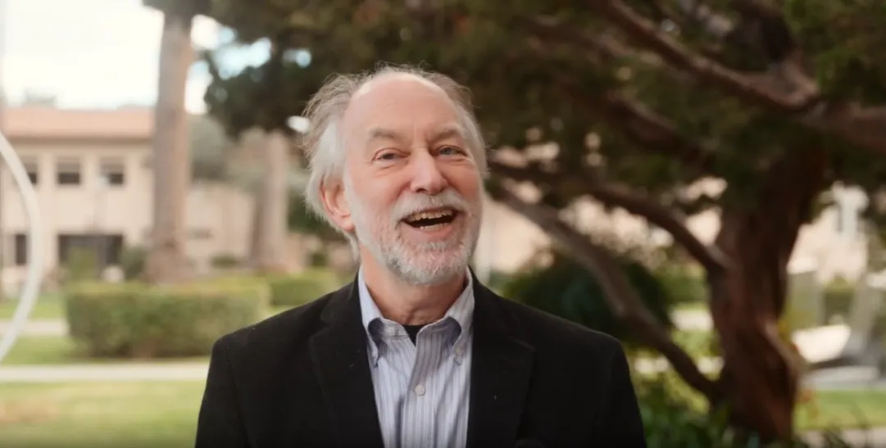

About Louis
Academic background
Louis E. Newman is the former Dean of Academic Advising at Stanford University, professor emeritus at Carleton College, and author of Thinking Critically in College.

Academic administration
Stanford University
Louis E. Newman is the former Dean of Academic Advising and Associate Vice Provost for Undergraduate Education at Stanford University. At Stanford his responsibilities included overseeing:
- An extensive residential advising program
- The pre-law and pre-med advising programs
- Transfer and co-term student advising
- New student orientation programs
- A summer bridge program
- The university’s academic progress review system
At Stanford, he grew the advising program, promoted a holistic approach to academic advising, and advocated for liberal education.
Teaching and scholarship
Carleton College
He is also the John M. and Elizabeth W. Musser Professor of Religious Studies, Emeritus, at Carleton College, where he taught for thirty-three years. He is a renowned scholar of Jewish ethics who has published several books in that field.
During his tenure at Carleton, he also served as an Associate Dean of the College, which included expanding the advisor training program and launching new programs to support advisors.
He also served a three-year term as Director of the Perlman Center for Learning and Teaching, which sponsored weekly programs for faculty and staff on all aspects of pedagogy, academic policy, and trends in higher education. In this role he also functioned as the informal mentor to the faculty at Carleton, which is nationally recognized for its superb undergraduate teaching.
Today
Consulting, writing and coaching
Louis regularly consults with colleges and universities around issues of academic advising, curricular reform, and effective pedagogy.
His most recent book is Thinking Critically in College: The Essential Handbook for Student Success (Manhattan Book Group, 2026), which guides students through the transition from high school to college-level academic work. He also works as a College Success Coach.
Shorter version
Short bio
Louis E. Newman is the former Dean of Academic Advising and Associate Vice Provost for Undergraduate Education at Stanford University. At Stanford his responsibilities included overseeing the undergraduate advising program, new student orientation programs, a summer bridge program, and the university’s academic progress review system. During his time at Stanford, he expanded the advising program, promoted a holistic approach to academic advising, and advocated for liberal education.
He is also the John M. and Elizabeth W. Musser Professor of Religious Studies, Emeritus, at Carleton College, where he taught for thirty-three years. During his tenure at Carleton, he also served as an Associate Dean of the College and as Director of the Perlman Center for Learning and Teaching.
He is a scholar of Jewish ethics who has published several books in that field. His most recent book is Thinking Critically in College: The Essential Handbook for Student Success (Manhattan Book Group, 2026), which guides students through the transition from high school to college-level academic work.
You gave your student all the help they needed to get into college. Now you can give them the help they need to succeed.
Schedule a free, no obligation, consultation to see if College Success Coaching is right for your student.
Schedule a ConsultationBack to About Louis.